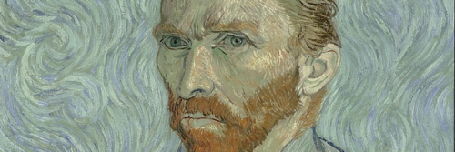

Van Gogh Self Portrait
Only one portrait photo of Vincent has survived. It shows him at the age of 19 with a slightly gruff expression. Almost everything else we know about his appearance comes from the many self-portraits he painted. No fewer than 35 of them are known. They tell us that he had red hair, green eyes and an angular face. Yet each of those faces is different. Vincent himself wrote: ‘People say – and I’m quite willing to believe it – that it’s difficult to know oneself – but it’s not easy to paint oneself either.’